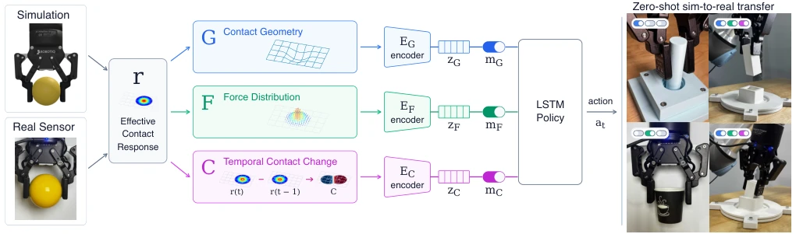
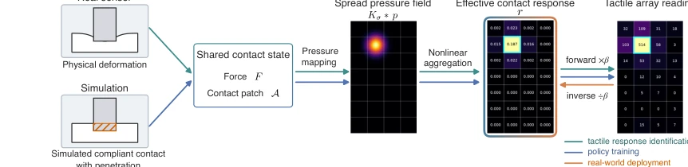
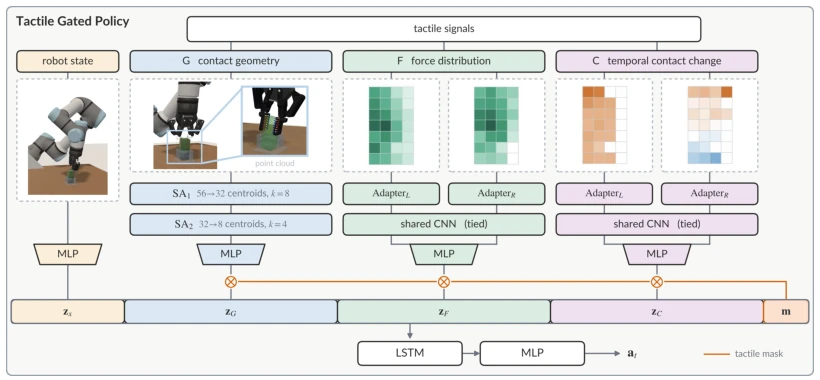
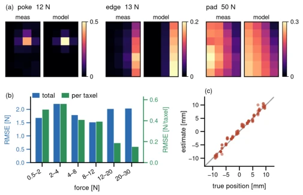
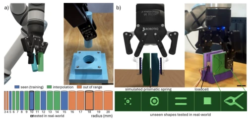

<!DOCTYPE html><html lang="en" class="lang-en"><head><meta charset="utf-8">
<meta name="viewport" content="width=device-width,initial-scale=1">
<title>Factorized Tactile Representation and Control for Sim-to-Real Manipulation</title><style>
body{font:16px/1.7 -apple-system,Segoe UI,Roboto,'Noto Sans CJK SC',sans-serif;
 max-width:860px;margin:0 auto;padding:32px 20px;color:#1a1a1a;background:#fafafa}
h1{font-size:24px;line-height:1.3} h2{font-size:19px;border-left:4px solid #6c8cff;
 padding-left:10px;margin-top:34px;color:#27408b}
.meta{color:#666;font-size:13px;margin-bottom:8px}
.meta a{color:#6c8cff;text-decoration:none;margin-right:10px}
figure{margin:16px 0;text-align:center}
figure img{max-width:100%;border:1px solid #e0e0e0;border-radius:6px;background:#fff}
figcaption{font-size:12px;color:#777;margin-top:6px}
.badge{background:#ffb454;color:#000;font-size:11px;font-weight:700;padding:2px 8px;border-radius:4px}
.back{font-size:13px}
.en{display:none}
.lang-en .zh{display:none}
.lang-en .en{display:revert}
.langbtn{position:fixed;top:12px;right:12px;background:#27408b;color:#fff;border:0;
 border-radius:6px;padding:6px 12px;cursor:pointer;font:inherit;z-index:10}
.catgrid{display:grid;grid-template-columns:repeat(auto-fill,minmax(155px,1fr));gap:10px;margin:12px 0}
.catblock{display:flex;flex-direction:column;align-items:center;justify-content:center;gap:8px;
 min-height:72px;padding:12px;background:#e3e7ef;border:2px solid #6c8cff;
 border-radius:10px;color:#1a2030;text-decoration:none;text-align:center;font-size:13px;font-weight:600;
 transition:background .15s}
.catblock:hover{background:#bcc4d6}
.catblock .cnt{color:#2f6bff;font-size:14px;font-weight:800}
</style></head><body>

<button class="langbtn" id="langbtn" onclick="toggleLang()">中文</button>
<script>
function setLang(lang){
  var en=lang!=='zh';
  document.documentElement.classList.toggle('lang-en',en);
  document.documentElement.lang=en?'en':'zh-CN';
  var b=document.getElementById('langbtn');
  b.textContent=en?'中文':'English';
  b.setAttribute('aria-label',en?'Switch to Chinese':'切换为英文');
  var title=document.querySelector('title');
  if(title && title.dataset.en) title.textContent=en?title.dataset.en:title.dataset.zh;
}
function toggleLang(){
  var lang=document.documentElement.classList.contains('lang-en')?'zh':'en';
  try{localStorage.setItem('rd_lang',lang)}catch(e){}
  setLang(lang);
}
(function(){var lang='en';try{lang=localStorage.getItem('rd_lang')||'en'}catch(e){}setLang(lang)})();
</script>

<p class="back"><a href="../index.html" onclick="if(history.length>1){history.back();return false}"><span class="zh">← 返回</span><span class="en">← Back</span></a></p>
<h1>Factorized Tactile Representation and Control for Sim-to-Real Manipulation</h1>
<p class="meta">Siqi Shang, Bianca Aumann, Tye Brady, Joshua Migdal, Taskin Padir<br>
<a href="http://arxiv.org/abs/2610.10510v1">abs</a><a href="https://arxiv.org/pdf/2610.10510v1">pdf</a></p>
<h2><span class="zh">论文点评</span><span class="en">Review</span></h2><div class="zh">这篇论文给触觉 Sim-to-Real 迁移来了个“分而治之”的解法。作者没傻乎乎地把所有触觉信号塞进一个黑盒，而是把接触响应拆成几何、力和时序变化三块。这就像做菜，有人喜欢盐，有人喜欢糖，全混一起反而不好吃。Tactile Gated Policy 允许在推理时动态切换输入，不用重新训练，这点挺实用。不过，这种因子化真的比端到端强多少？在复杂任务里，信息之间可能有耦合，硬拆会不会丢失上下文？实验结果确实显示不同任务依赖不同因子，但硬件要求不低，TSF-85 这种电容阵列也不是谁都能玩得起的。总的来说，是个思路清晰但工程门槛不低的方案，适合那些对触觉信息利用率有强迫症的团队。此外，虽然仿真成功率高，但实机提升幅度有限，说明物理域随机化仍有挑战。</div><div class="en">This paper brings a &#x27;divide-and-conquer&#x27; solution to tactile Sim-to-Real transfer. The authors did not naively stuff all tactile signals into a black box, but decomposed the contact response into three blocks: geometry, force, and temporal changes. This is like cooking; some like salt, some like sugar, mixing them all together makes it taste worse. Tactile Gated Policy allows dynamic switching of inputs at inference, without retraining, this point is quite practical. However, how much stronger is this factorization really compared to end-to-end? In complex tasks, information may have coupling, hard splitting might lose context? Experimental results indeed show different tasks rely on different factors, but hardware requirements are not low, TSF-85 such capacitive array is not affordable for everyone. Overall, it is a clear thinking but not low engineering threshold scheme, suitable for those teams with obsession on tactile information utilization. Additionally, although simulation success rate is high, but real machine improvement amplitude is limited, indicating physical domain randomization still has challenges.</div><h2><span class="zh">研究动机</span><span class="en">Motivation</span></h2><div class="zh">触觉 Sim-to-Real 一直是硬骨头。物理接触力学和传感器响应在仿真和现实中很难对齐。现有工作要么简化触觉为二值接触 [4]，要么用中心压力点 [5]，虽然好迁移但丢了细节。有的试图重建变形场 [9]，计算开销大且难校准。作者指出，不同任务需要的触觉信息不同：几何推断容忍幅度变化，力控需要绝对加载量，时序变化对增益不敏感。现有方法往往把所有信息压缩成一个表示，导致无法针对任务灵活调整。这篇论文想解决的是：如何在保留丰富分布式信息的同时，让仿真和硬件共享一个可恢复的接口，并且让策略能按需提取信息，而不是“一刀切”。</div><div class="en">Tactile Sim-to-Real has always been a tough problem. Physical contact mechanics and sensor responses are difficult to align between simulation and reality. Existing work either simplifies touch to binary contact [4] or uses center of pressure [5]; although good for transfer, details are lost. Some attempt to reconstruct deformation fields [9], with high computational cost and difficult calibration. The authors point out that different tasks require different tactile information: geometry inference tolerates magnitude changes, force control needs absolute loading amount, temporal changes are insensitive to gain. Existing methods often compress all information into one representation, resulting in an inability to flexibly adjust for tasks. This paper aims to solve: how to retain rich distributed information while allowing simulation and hardware to share a recoverable interface, and enabling the policy to extract information on demand, rather than &#x27;one-size-fits-all&#x27;.</div><h2><span class="zh">方法</span><span class="en">Method</span></h2><div class="zh">整体流程分三步。首先定义“有效接触响应”$r$，基于法向力和接触区域，通过各 taxel 增益 $eta_j$ 校准，把仿真中的接触量和现实中的传感器读数映射到同一空间，避免重建变形场。然后因子化：几何 (G) 用点集表示位置，力分布 (F) 保留响应网格，时序变化 (C) 用对比度捕捉动态，三者互不干扰。接着是 Tactile Gated Policy，三个表示分别编码成 64-D latent，几何编码器用 PointNet++ 处理点集，力与时序用 CNN 处理网格，最后通过三比特掩码 $m$ 选择哪些 latent 进入 LSTM。训练时覆盖所有 8 种掩码配置，推理时可根据任务切换，无需重训。随机化也是分开的，比如 G 扰动幅度，F 扰动位置，C 不变。这保证了因子化在控制中不被破坏，且策略能自适应不同信息组合。最后，通过共享响应模型，仿真和实机在 $r$ 空间对齐，解决了传感器增益差异问题。</div><div class="en">The overall process is divided into three steps. First, define &#x27;effective contact response&#x27; $r$, based on normal force and contact area, calibrated via each taxel gain $eta_j$, mapping contact amount in simulation and sensor readings in reality to the same space, avoiding reconstruction of deformation fields. Then factorization: Geometry (G) uses point sets to represent position, Force distribution (F) keeps response grid, Temporal changes (C) uses contrast to capture dynamics, the three do not interfere with each other. Next is Tactile Gated Policy, three representations encoded into 64-D latent respectively, geometry encoder uses PointNet++ to process point sets, force and temporal use CNN to process grids, finally through three-bit mask $m$ select which latents enter LSTM. During training, all 8 mask configurations are covered; during inference, can switch based on task, no need for retraining. Randomization is also separate, e.g., G perturbation magnitude, F perturbation position, C unchanged. This ensures factorization is not broken in control, and policy can adapt to different information combinations. Finally, through shared response model, simulation and real machine align in $r$ space, solving sensor gain difference problem.</div><figure><figcaption>Fig. 1: Simulated contact and real tactile sensor readings are mapped to a common effective contact response r, providing a shared tactile interface across the two domains. The response is factorized into contact geometry (G), force distribution (F), and temporal contact change (C). To preserve this factorization through control, the Tactile Gated Policy encodes each representation separately and uses a tactile mask m to select which latents reach the LSTM policy. All eight mask configurations are trained within one policy per task, allowing the active tactile representations to be changed without retraining. The policies trained in simulation transfer zero-shot to real-world Tactile Alignment, Grasp-Force Regulation, and Adversarial Peg Insertion, revealing that different tactile represen</figcaption></figure>
<figure><figcaption>Fig. 2: The response pipeline in both directions on a single calibration contact. From physical deformation on a real sensor or simulated compliant contact with penetration, force and contact patch produce a spread pressure field via an anisotropic Gaussian kernel, which is nonlinearly aggregated into the per-taxel effective contact response r. The forward path multiplies by per-taxel gain β to predict raw counts; the inverse path divides measured counts by β to recover r, separating the shared nonlinear contact response from unit-specific electronic gain.</figcaption></figure>
<figure><figcaption>Fig. 3: Tactile Gated Policy. Separate encoders produce geometry, force, and temporal-change latents. The mask m gates these latents before concatenation with the encoded robot state and mask itself as input to the LSTM actor.</figcaption></figure><h2><span class="zh">实验</span><span class="en">Experiments</span></h2><div class="zh">硬件用 UR5e + Robotiq 2F-85 + 两个 TSF-85 电容垫。任务包括触觉对齐（测空间）、抓握力调节（测力）、对抗插销（测综合）。结果方面，G 主导对齐任务（1mm 精度），F 主导力控（1.69N 误差），GFC 在插销任务中实机成功率最高（63.3% vs 46.7%）。消融显示去掉任一因子都会降低实机表现。对比基线（Binary, CoP, r）显示，因子化在实机迁移上优于未因子化的完整响应 $r$。证明了不同触觉形式在不同交互中效用不同，且无需重训即可切换。此外，响应重建在未见几何上表现良好，验证了泛化能力。</div><div class="en">Hardware uses UR5e + Robotiq 2F-85 + two TSF-85 capacitive pads. Tasks include tactile alignment (measure space), grip force regulation (measure force), peg-in-hole (measure comprehensive). In terms of results, G dominates alignment task (1mm accuracy), F dominates force control (1.69N error), GFC has highest real-world success rate in peg-in-hole task (63.3% vs 46.7%). Ablation shows removing any factor will reduce real-world performance. Comparison with baselines (Binary, CoP, r) shows factorization is superior to un-factored full response $r$ in real-world transfer. Proves different tactile forms have different utility in different interactions, and can be switched without retraining. Additionally, response reconstruction performs well on unseen geometries, validating generalization ability.</div><figure><figcaption>Fig. 5: The effective response bridges physical tactile measurement while retaining task-relevant contact information. (a) measured and modeled count patterns for a localized poke, edge, and distributed pad contacts. (b) held-out force error by true force bin, in total force and per activated taxel; error stays low inside the identified operating range and rises as the sensor approaches compression. (c) contact localization recovered from counts on a held-out fine scan, substantially finer than the taxel pitch.</figcaption></figure>
<figure><figcaption>Fig. 6: Controlled tactile manipulation. (a) Tactile Alignment: the policy aligns a cylinder with an unknown in-hand pose. Hardware evaluation records the deepest level reached in a fixture with 6, 4, 2, and 1 mm radial clearance. (b) Grasp-Force Regulation: the policy commands gripper increments during a scripted hold-and-lift motion. The simulated object’s two plates are coupled by a prismatic spring with randomized stiffness. An independent load cell supplies the hardware force reference. Scale bars: 2 cm. standard deviation is 0.85–0.93 times that predicted by the measured additive-noise model across a 100× range of contact levels. This agreement shows that the residual variation under static contact is well explained by sensor noise.</figcaption></figure>
</body></html>